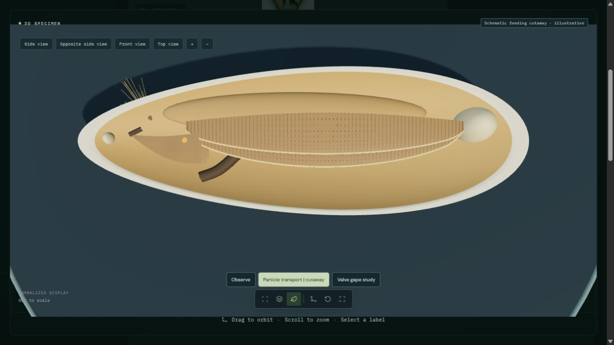
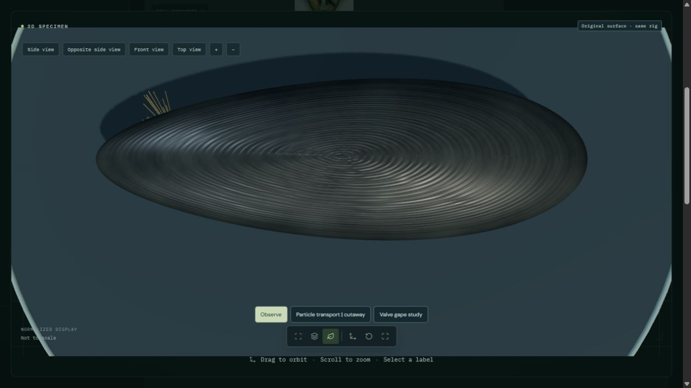

Open interactive blue mussel | Previous movement work
An 18-second qualitative cutaway hides one valve to expose four gill demibranchs, food grooves, paired labial palps and a mouth entry. Exaggerated green and amber markers follow gill surfaces and grooves toward the palps. Illustrative palp flexion accompanies acceptance toward the mouth or rejection along the ventral margin to the posterior palp tip, then an authored mantle-margin route. Marker colors prescribe alternative outcomes; they do not simulate food selection. The cutaway is an inspection view, not a living valve-opening posture.
This adds a partial feeding mechanism. It does not establish photorealism, complete filtration or physiological accuracy. Qualitative particle routes and palp flexion implemented, with a restored exterior outside the study. Shell and soft-body geometry remain simplified; cilia, mucus rheology, pumping, gill pores, exhalant water, digestion and biological selection are not simulated. No physiological or photorealistic validation.


Green and amber markers are enlarged explanatory symbols, not natural pigment. Palp deformation and all transport paths are authored. Pseudofeces are rejected before ingestion; they are distinct from feces. The downstream mantle route is illustrative and does not solve water currents or mucus transport. One valve is hidden for inspection; no dissection-like opening angle is presented as normal behavior.
Checks cover gill and palp surface contact, continuous stage boundaries, finite timing, reset, source surface/material/UV preservation and sampled browser views. These are software and presentation checks, not independent biological validation. The original authored shell retains its existing form and texture limitations.
52 animal processes remain fully unavailable; 185 across all kingdoms. Partial studies retain their stated limitations.